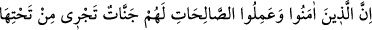

vardır.” Âyetin bu son kısmında “sonra tevbe de etmeyenlere” ifâdesi yer alıyor. Bu
tevbenin inkâr ve işkenceden tevbe olduğunu az önce vurgulamıştık. Çünkü yukarda
zikredilen dininden dolayı insanları ateşe atıp yakma, onlara işkence etme asla kâfirin
dininden tasavvur olunamaz. Âyette “sonra” anlamına gelen “sümme” kelimesinin
getirilmesi, Allah’ın hilminin ve kereminin mükemmel olduğuna işâret etmek içindir.
Çünkü hilmi ve keremi mükemmel olduğu için kâfirleri kahretmede acele etmiyor.
Süresi ne kadar uzun olursa olsun, ne kadar gecikirse geciksin tevbeyi kabul ediyor.
İmam er-Razi’nin ifâdesine göre bu âyet-i kerime kasten adam öldürerek katil olan
kimsenin yapacağı tevbenin kabul edileceğine işâret etmektedir.
Âyetin ifâdesine göre mü’minlere işkence eden bu kimselere Cehennemde ebediyen
azap olacak, mü’minlere işkence ettikleri için yanma cezâsıyla cezâlandırılacaklardır.
Ya da onlara cehennemliklerin gördükleri azaba ek olarak daha fazla azap verilecektir.
Âyette yer alan “Cehennem azabı” deyimiyle Cehennemin soğuğu ve zemherisinin
kasdedilmiş olması da muhtemeldir. Aynı âyette yer alan “yanma cezâsı” ifâdesiyle de
Cehennemin sıcaklığı kasdedilmiş olabilir. Böylece onlar bir soğuğa, bir sıcağa girip
çıkacaklar, gelip gideceklerdir. Görecekleri yanma cezâsı dünyada iken mü’minleri
ateşe verip yaktıkları, soğuk cezâsı ise bundan başka işlemiş oldukları günahları
sebebiyle olacaktır. Nitekim âlimler derler ki: Ceza yapılan fiilin cinsinden olur.
Yanma anlamında âyette “el-harîk” kelimesi geçiyor. Bu “ihtirak/yanmak” anlamında
bir isimdir. Nitekim “el-hurka” kelimesi de aynı anlama gelir.
Burada işâret olunuyor ki; “el-harîk” yakıcı ateş mânâsınadır. Nitekim Müfredat’ta
“el-harîk” kelimesinin “en-nar/ateş” anlamında olduğu ifâde edilir. Ayrıca “el-harak”
kelimesi de Kamus’un ifâdesine göre ateş veya ateşin alevi anlamındadır. Bu kökten
türeme; “harku’ş-şey’i” ifâdesi herhangi bir şeye alev olmaksızın harâret ve sıcaklık
vermektir. Söz gelimi kumaşın sıcaklığının onu dövmekle olması gibi. “İhrak” ise
herhangi bir şeye alevi olan ateş vermek, bir başka ifâdeyle herhangi bir şeyi yakıp
tutuşturmak demektir. İşte bu ifâdeden alınarak istiâre sanatıyla “ahrakanî bi levmihi”
derler. Bu deyim, herhangi bir kimse bir başkasına eziyet vermekte ileri gittiğinde
kullanılır. Anlamı; “filanca kınamasıyla beni yaktı” demektir.
Kanâatimize göre zâhir olan husus bu âyette geçen “el-harîk” ifâdesinin burada “el-
muhrîk/yakıcı” anlamına geldiğidir. Tıpkı “elîm” kelimesinin “mu’lim/acı verici”
mânâsına gelmesi gibi. Bu durumda azap kelimesinin harîk kelimesine izâfeti, mevsufun
sıfatına izâfeti kabilinden olur. Aynı durumda “yakıcılıkta fazlalık” vurgulaması,
ifâdedeki mukabeleden anlaşılır. Çünkü atıf, amelde ileri gitmeye bağlı olarak azapta
kademece ileri gitme kabilinden olur.